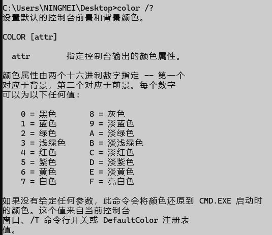

本文中的代码不一定能适应所有种类的Windows系统
请自行测试后再做出结论，你可以在评论区留言
开端
不知道你曾经是否有遇到和我类似的情况：
想要暂时禁止显示屏熄屏或休眠，但又不想去修改系统配置或是下载相关软件
毕竟只是暂时修改配置，不需要了还需要再改回来
下载其他软件又感觉没有必要，毕竟谁清楚某些软件是否真的干净呢
那么，难道就没有简单的脚本能够解决这个问题吗？
当然是有的，请看以下脚本！
1 | ' & color 70 & title AntiSleep & mode con cols=30 lines=6 & cls & cscript.exe /nologo /e:vbscript "%~f0" & exit |
保存为.bat或.cmd文件
如果你想了解更多，请看：
代码详解
首先是第一行:
' & color 70 & title AntiSleep & mode con cols=30 lines=6 & cls & cscript.exe /nologo /e:vbscript "%~f0" & exit
其中’(单引号)，在VBS中的作用是注释，这意味着在作为VBS脚本处理时，整个第一行都将作为注释直接跳过
在批处理中作为命令直接执行单引号没有作用，但批处理并不会因为单引号无法执行就退出，而是会处理’后面使用&符号连接的命令
&在批处理中作为命令连接符，用于顺序执行多个命令，不管前一个命令是否成功执行
这意味着在作为批处理处理中，这条代码的单引号后面的命令都会继续执行
color 70 是将命令行(cmd)窗口的颜色设置为白底黑字

title AntiSleep 是将命令行窗口的标题改为"Antisleep"
mode con cols=30 lines=6 是将命令行窗口大小设置为 30 列和 6 行
cls 用于清空命令行窗口中输出的内容
cscript.exe /nologo /e:vbscript "%~f0" 其中:
cscript.exe是 Windows 中用于运行 VBScript 脚本的命令行工具
/nologo /e:vbscript是设置在执行时禁用显示CScript 的标志性标识与指定要执行的脚本类型
"%~f0"表示当前批处理文件的完整路径名
这意味着告诉cscript使用VBS类型执行自己
exit 代表退出当前执行批处理的CMD.EXE
第一行的作用就是在运行时设置命令行窗口的各项属性
并将自己以VBS类型执行，最后，当执行的VBS(csript.exe)退出后也自行退出
接下来是第二到三行:
Dim LoopNum
Dim TimeNow
从第二行开始的所有命令都将以VBS脚本而不是批处理脚本运行
Dim 在VBS中用于声明变量
其实说白了，这两条代码就是创建了两个变量"LoopNum"与"TimeNow"
第四行:
LoopNum = 1
为提前定义好的变量"LoopNum"赋值，值为 1
第五行:
set wsc = CreateObject("WScript.Shell")
其中:
CreateObject("WScript.Shell")用于创建一个 WshShell 对象WshShell 是VBS中的一个内置对象，它提供了许多有用的功能，例如运行程序、操作注册表、创建快捷方式
而
set wsc =则是代表设置之后使用wsc(字符串)来代表WshShell
第六行与第十三行:
Do
Loop
Do…Loop 是一种循环结构，用于重复执行一组语句，直到满足特定条件，其中:
Do While…Loop：在条件变为 False 之前重复执行语句
Do Until…Loop：在条件变为 True 之前重复执行语句
而在这里，我们只使用了Do与Loop，并没有设置条件，这意味着其中的代码将一直循环
第七行:
TimeNow = Time
为提前定义好的变量"TimeNow"赋值，值为 Time函数
Time 函数用于获取当前系统时间
第八到九行:
WScript.Echo " Send successfully_Loop:" & LoopNum
WScript.Echo " " & TimeNow
类似批处理的echo，WScript.Echo输出指定内容
这两条代码输出LoopNum与当前时间(变量TimeNow)
第十行:
WScript.Sleep (60*1000)
让脚本暂停 60*1000 毫秒，也就是一分钟
第十一行:
wsc.SendKeys ("{SCROLLLOCK 2}")
使用SendKeys发送两次滚动锁定键
(Scroll Lock，在HOME上面，笔记本电脑可能没有，但也能发送)
第十二行:
LoopNum = LoopNum + 1
使变量LoopNum的值加 1
如果您喜欢此博客或发现它对您有用，则欢迎对此发表评论。 也欢迎您共享此博客，以便更多人可以参与。 如果博客中使用的图像侵犯了您的版权，请与作者联系以将其删除。 谢谢 ！